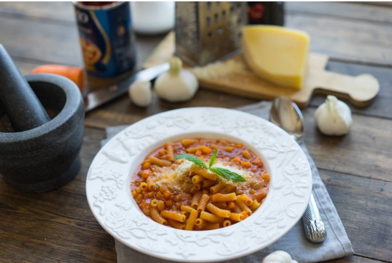

🍝 Паста в собственном соку с фасолью и томатным соусини
📋 Ингредиенты
- Лук репчатый — 1 шт.
- Морковь — 1 шт.
- Чеснок молодой — 3–4 зубчика
- Оливковое масло — 2 ст. л.
- Фасоль белая (в томатном соусе) — 150 г
- Томаты в собственном соку — 200 г
- Паста короткая (фузилли, ригатони) — 200 г
- Бульон (куриный/овощной) или кипяток — ~1 л
- Пармезан тёртый — для подачи
- Базилик свежий — по желанию
👩🍳 Приготовление
- Лук и морковь нарезать мелким кубиком (≈5 мм). Чеснок — тонкими слайсами. Кстати, я брала молодой чеснок — он чистится легче и намного мягче.
- В большой сковороде или сотейнике разогреть оливковое масло. Обжарить лук до прозрачности (3–4 минуты).
- Добавить морковь и чеснок, жарить ещё 5 минут. Если есть сельдерей — порежьте пару стеблей и добавьте вместе с морковью: получится классическое софрито.
- Отправить в сковороду белую фасоль (я беру консервированную в томатном соусе, но подойдёт и красная фасоль, и предварительно замоченная сырая). Обжаривать 2 минуты.
- Влить томатное содержимое: очищенные томаты в собственном соку (предварительно размять лопаткой) или кубики томатов в соусе. Перемешать.
- Влить около литра бульона (или кипятка). Довести до кипения.
- Всыпать 200–250 г сухой пасты (лучше короткой: фузилли, ригатони, макароны). Варить, помешивая, до состояния чуть недоваренной (al dente) — она дойдёт в горячем соусе.
- На этом этапе можно регулировать густоту: добавить больше бульона — получится томатный суп с пастой, оставить как есть — будет густая паста в томатном соусе.
- Подавать, щедро посыпав тёртым пармезаном и свежим базиликом. Готово, любимки мои! 🍷
Всем приятного аппетита, родные! 💚🤍❤️
